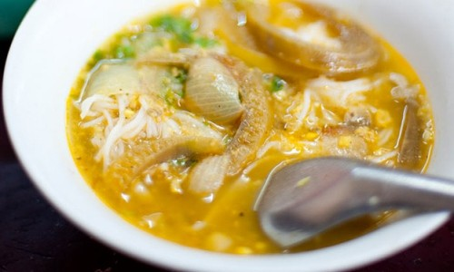
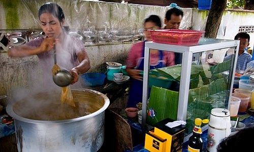

ЛУЧШАЯ УЛИЧНАЯ ЕДА СО ВСЕГО МИРА: ЕДЕМ В КУЛИНАРНОЕ КРУГОСВЕТНОЕ ПУТЕШЕСТВИЕ!
Мы уже давно привыкли к хот-догам и шаурме, которые можно купить в одной из палаток прямо посреди любого города нашей страны и перекусить на ходу. А вот отправляясь путешествовать, чем можно полакомиться и утолить свой голод в чужой стране? Вот список лучше уличной еды мира.
Мохинга из Мьянмы
Mohinga

Что это? "Этот суп с лапшой представляет собой пример земных вкусовых качеств кухни своей страны. Это рыбный бульон с рисовой или гороховой мукой и традиционным сочетанием лука шалот, хрустящей сердцевины бананового дерева, тонкой рисовой лапши и рубленого кориандра."
"Происхождение: " "Мохингу готовят из практически исключительно местных ингредиентов, что подчеркивает его происхождение. Большинство блюд с лапшой юго-восточной Азии уходят корнями в Китай."
